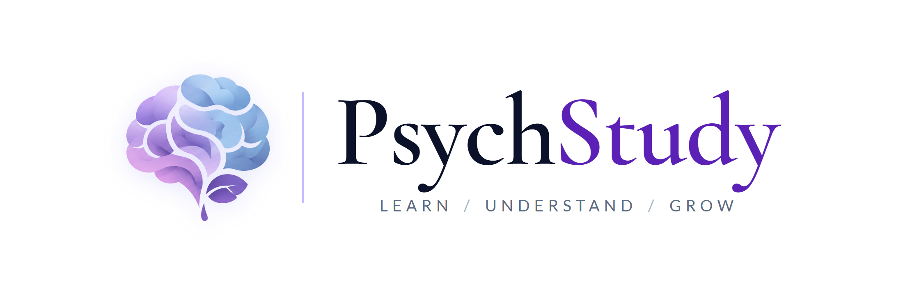
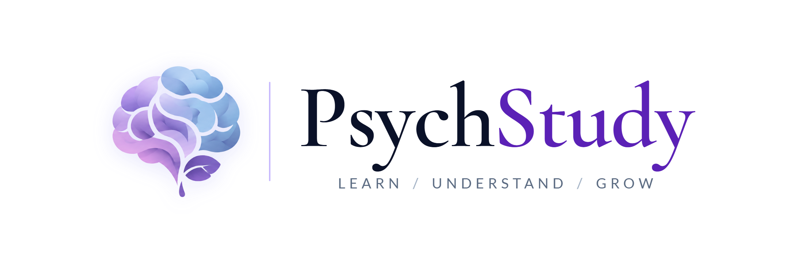
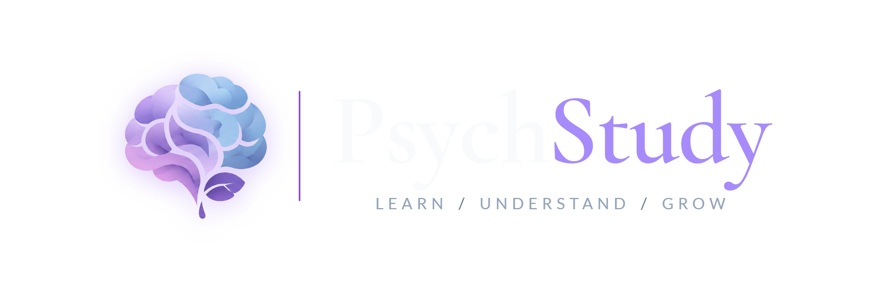

1. Deliverables Suite (Production Ready)
Master horizontal locks, alpha-tested transparent outputs, nocturnal workstation modes, official black-and-white print editions, and standalone icon marks.









2. Typography System Specification
Academic editorial elegance anchored by Christian Thalmann’s classic Cormorant Garamond serif and balanced by Łukasz Dziedzic’s architectural Lato sans-serif.
Cormorant Garamond
Primary Wordmark Typeface · SemiBold (Weight 600)
Google Fonts
PsychStudy
X-Height Proportion
0.395 (Delicate & Refined)
Ascenders
Ascends Above Cap-Height ('h', 'd')
Tracking / Kerning
-0.015em (-2.5px Optical Union)
Baseline Metric
Zero Delta (Continuous Baseline)
Lato
Supporting Brand Tagline & Micro-Typography · Regular (Weight 400)
Google Fonts
LEARN / UNDERSTAND / GROW
Letter-Spacing
0.28em (Architectural Tracking)
Case Hierarchy
All-Caps (Versalien)
Visual Weight
400 (Optical Serenity)
Alignment
Centered Beneath Wordmark
3. Brand Color Architecture
Color palette harmonizing deep scholarly authority, royal clinical intellect, and crisp WCAG AA/AAA legibility.
#0A1128
Midnight Navy
Primary Wordmark ("Psych")
RGB10, 17, 40
CMYK75, 58, 0, 84
Contrast (White)17.5:1 (AAA)
#5B21B6
Royal Violet
Secondary Wordmark ("Study")
RGB91, 33, 182
CMYK50, 82, 0, 29
Contrast (White)7.4:1 (AAA)
#C4B5FD
Lavender Mist
Vertical Architectural Divider
RGB196, 181, 253
CMYK23, 28, 0, 1
Stroke Width1.5px – 2px
#5B6B82
Academic Slate
Supporting Tagline & Metadata
RGB91, 107, 130
CMYK30, 18, 0, 49
Contrast (White)5.2:1 (AA)
#A78BFA
Luminous Lilac
Dark Mode Wordmark ("Study")
RGB167, 139, 250
CMYK33, 44, 0, 2
Contrast (Dark)9.8:1 (AAA)
4. Web Implementation & CSS Variables
Standard implementation for web applications, university portals, and digital publications.
/* Google Fonts CDN Import */
<link href="https://fonts.googleapis.com/css2?family=Cormorant+Garamond:wght@600&family=Lato:wght@400&display=swap" rel="stylesheet">
/* Wordmark Styling */
.psych-wordmark {
font-family: 'Cormorant Garamond', Georgia, serif;
font-weight: 600;
color: #0A1128;
letter-spacing: -0.015em;
}
.study-wordmark {
font-family: 'Cormorant Garamond', Georgia, serif;
font-weight: 600;
color: #5B21B6;
letter-spacing: -0.015em;
margin-left: -2px; /* optical union */
}
/* Tagline Styling */
.psych-tagline {
font-family: 'Lato', sans-serif;
font-weight: 400;
font-size: 0.16em; /* relative to wordmark font-size */
letter-spacing: 0.28em;
text-transform: uppercase;
color: #5B6B82;
text-align: center;
}